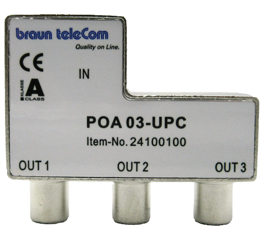

- Bitte gerne!
- Bitte gerne!
Hallo Community,
von Magenta bekam ich den braun teleCom 2 Port Adapter POA-01-A, um den TV und den Router anschließen zu können. Laut brauntelecom.de gibt es auch eine 3 Port (Out) Variante. Meine Anfrage dort nach wo kaufen endete mit einem "wenden sie sich an Magenta". Ist bekannt, ob Magenta so einen Breitband-Push on Adapter hat und wie ich ihn gegen den jetzigen 2 Port eintauschen kann?
Gruß, Heinz
Hallo Heinz,
meinst du diesen hier?

Üblicherweise bekommst du den kostenfrei in einen unserer Magenta Shops oder auf Anfrage wird dir dieser auch zugeschickt. Wende dich dazu an unsere Kolleg:innen unter 0676 200 7777 oder via 24/7 Chat in der Mein Magenta App.
Liebe Grüße JD.
Genau diesen Adapter suche ich. Danke!
 - Bitte gerne!
- Bitte gerne!
Wollte mir heute einen solchen 3 Port Adapter in meiner Filiale holen, da ich mir zusätzlich zu den beiden TV-Boxen das Festnetz Internet installiert habe.
Die Antwort des Mitarbeiters: "So etwas haben wir nicht. Ich weiß auch gar nicht, ob es so etwas überhaupt gibt. Versuchen sie es eventuell beim Media Markt oder Hartlauer."
Ich bin ein wenig irritiert. Was soll man denn sonst machen, wenn man mehr als 2 Geräte anstecken möchte?
Servus @Maria Pröglhöf , diesen Zwei/dreifach Adapter sollte man schon in jedem Magenta Shop bekommen können.
Außer diese sind gerade vergriffen, dann versucht man es in einigen Tagen nochmals.
Alternativ frage mal bei der Technikline 0676 200 7777 an ob Sie dir eventuell einen Zusenden könnten was auch möglich währe.
Leider konnte mir die Technikline auch keinen 3-fach Adapter zur Verfügung stellen. Scheint wirklich nicht mehr im Programm zu sein.
Allerdings werde ich diesen Verteiler bei den neuen TV-Boxen nur benötigen, falls ich auf beiden TV-Geräten Teletext empfangen möchte. Ansonsten sollte die 2. Box über Strom funktionieren.
@heinzM , deinen Zweifach Antennen Verteiler brauchst du nicht auf einen Dreifachen auszutauschen, den diesen kannst du weiterhin behalten.
Der Dreifach Antennen Verteiler sollte in einem Magenta Shop zu bekommen sein, außer dieser ist gerade Vergriffen, dann muss man einige Tag Später nochmal anfragen.
Alternativ kann man sich diesen Dreifach Antennen Verteiler auch über die Technikline 0676 200 7777 zusenden lassen falls verfügbar.
Währe mir neu, dass es diese Verteiler nicht mehr geben sollte zumal Magenta in jede TV Box Packung einen Zweifach Verteiler mit reinpackt.
Zusatzalternative währe noch bei der Serviceline 0676 2000 TV und Entertainment anfragen!.
PS: War selber erst vor Kurzem in Wien 21 Citygate im (sehr kleinen) Magenta Shop, und hatte mir einen Dreifach Antennen Verteiler geben lassen.

Servus @Maria Pröglhöf , servus @heinzM ,
Die Dreifach Antennenverteiler sind noch immer in den Magenta Shops erhältlich.
Laut Angabe des Shop Mitarbeiters bei uns in Wien 21 Citygate ist nichts bekannt, dass diese Verteiler aus dem Portfolio (Program) rausgenommen wurden, also immer noch erhältlich.
Habt Ihr mittlerweile schon einen Dreifach Antennenverteiler erhalten oder zugesandt bekommen?.